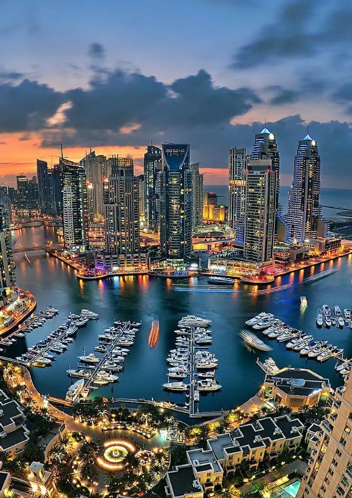

BEACHFRONT • LUXURY • LIFESTYLE
Explore Dubai's most popular beach clubs, combining luxury hospitality, private beaches, pool experiences and stunning views of the Arabian Gulf.
Dubai has developed one of the world's most vibrant beach club scenes. Luxury resorts, waterfront venues and lifestyle destinations attract residents and visitors seeking relaxation, entertainment and premium hospitality.
Beach clubs combine several experiences in one location:
• Private beach access
• Swimming pools
• Restaurants and cafes
• Wellness facilities
• Live entertainment
• Waterfront views
Palm Jumeirah hosts some of Dubai's most exclusive beach clubs, offering premium facilities, beachfront dining and luxury hospitality experiences.
Many visitors choose Palm Jumeirah for its resort atmosphere and iconic views.
Dubai Marina and Jumeirah Beach Residence provide access to vibrant waterfront venues, beach clubs and social destinations that remain popular throughout the year.
Many luxury hotels offer beach club access alongside spa facilities, fine dining and premium hospitality services.
These venues often provide day passes and seasonal experiences for visitors.
October through April offers the most comfortable weather for outdoor beach activities and waterfront experiences.
Weekdays are generally quieter, while weekends attract larger crowds and special events.
Beach clubs are ideal for:
• Tourists
• Couples
• Groups of friends
• Business travelers
• Residents seeking weekend leisure
Dubai's beach clubs have become an essential part of the city's lifestyle and tourism offering. Whether you're looking for relaxation, social experiences or luxury hospitality, the city offers beach destinations for every type of visitor.